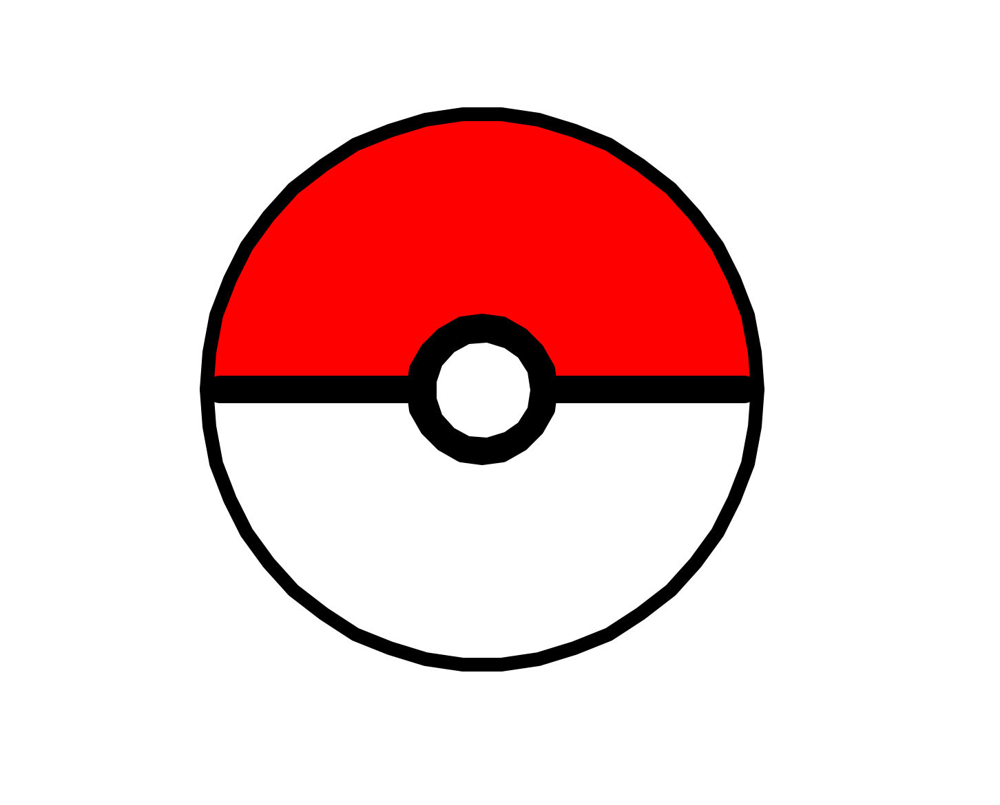

Output
This is an image I created using the Python Turtle Library. It is meant to be a Pokeball.
Python Code
def halfCircle(color):
turtle.color('black', color)
turtle.begin_fill()
turtle.forward(200)
turtle.right(90)
turtle.circle(-200, 180)
turtle.right(90)
turtle.forward(200)
turtle.end_fill()
def circle(color, radius):
turtle.color('black', color)
turtle.forward(radius)
turtle.right(90)
turtle.begin_fill()
turtle.circle(0-radius)
turtle.end_fill()
#Basic Settings
turtle.speed(0)
turtle.pensize(10)
#Creates top half
turtle.left(180)
halfCircle('red')
#Creates bottom half
turtle.right(180)
halfCircle('white')
#Creates middle black circle
circle('black', 50)
#Draws middle line
turtle.pensize(20)
turtle.left(90)
turtle.forward(140)
turtle.backward(380)
turtle.forward(190)
turtle.pensize(1)
#Draws middle white circle
circle('white', 35)
#Hides Turtle
turtle.hideturtle()